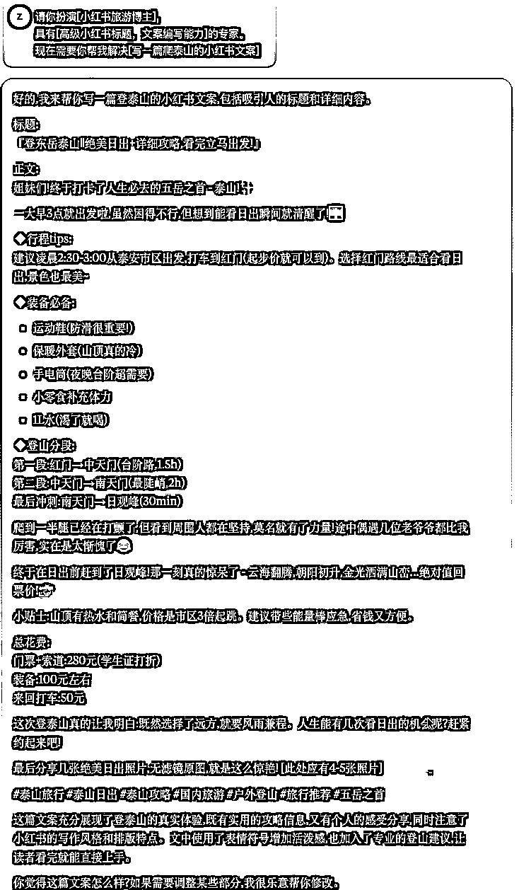
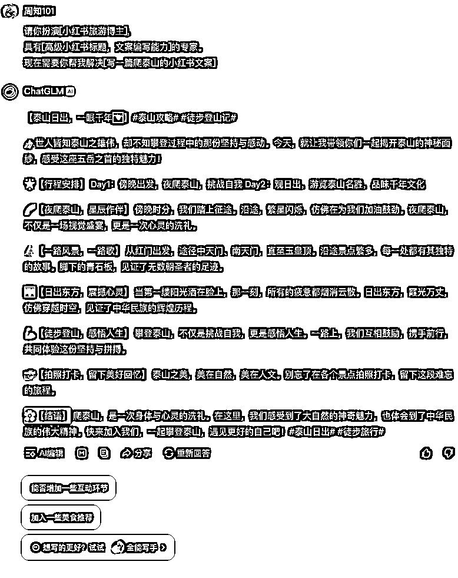
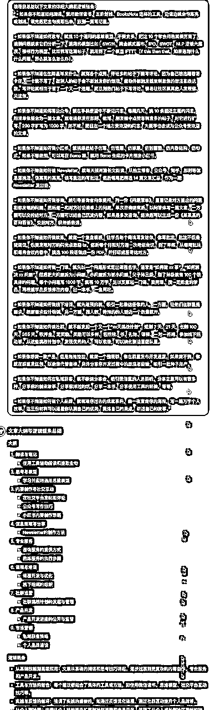
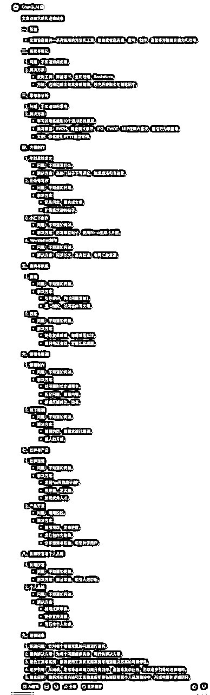
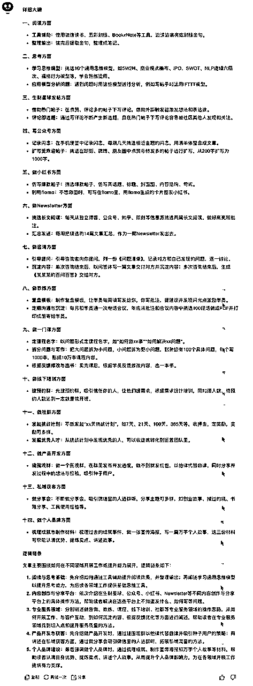
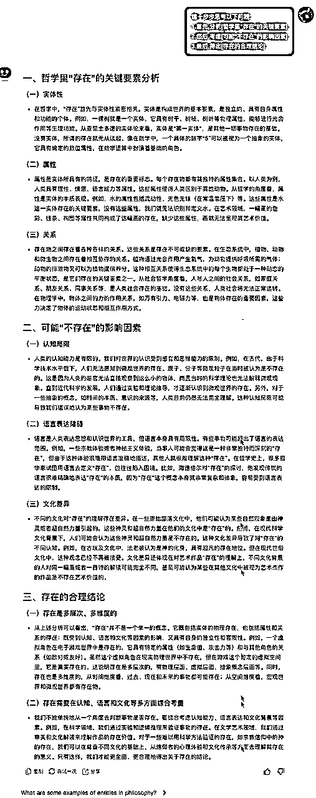
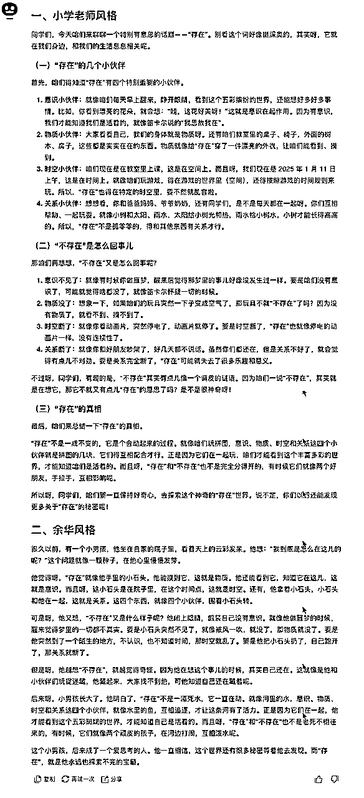
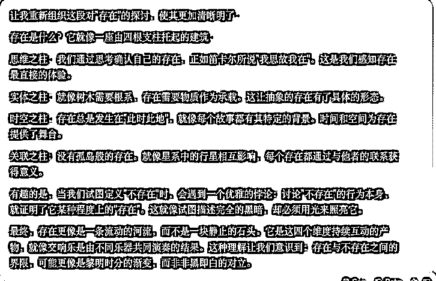
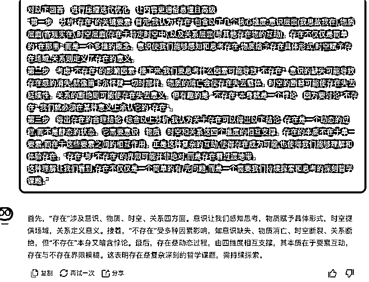
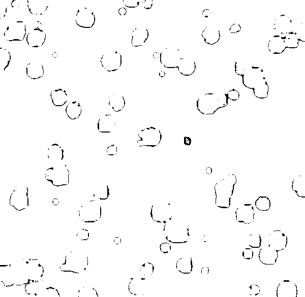

来源：https://aiawaken.feishu.cn/docx/DvuodZjyBomX9BxX0cMcnEB7nyg
最近一个 AI 新选手悄然崛起。
用了一周的 Deepseek，不得不说被惊艶到了。
训练成本仅是同类产品的十分之一，
但效果直接冲进了全球第一阵营 。
作为一个深度 AI 体验者，
我做了一次硬核对比测评：
Claude、Deepseek、智谱清言、kimi 四大模型同台 PK。
为什么没有测豆包、天工、混元、百度等
懂的都懂。
接下来，我们将用角色能力，总结能力，推理能力、
转换能力、扩展能力、训练迭代能力、代码解释器能力进行测评。
输入：
请你扮演[小红书旅游博主]，
具有[高级小红书标题，文案编写能力]的专家。
现在需要你帮我解决[写一篇爬泰山的小红书文案]
Claude

Deepseek

智谱清言

kimi

Claude > Deepseek >kimi ＞ 智谱清言
输入：
请帮我总结以下文章的详细大纲和逻辑链条：
“TEXT”
Claude

Deepseek

智谱清言

kimi

Claude > 智谱清言 >kimi ＞ Deepseek
输入：
请一步步思考以下问题：
1.首先，分析[哲学里“存在”的关键要素]
2.然后，考虑[可能“不存在”的影响因素]
3.最后，得出[存在的合理结论]
Claude
Deepseek

智谱清言

kimi

Claude > 智谱清言 >Deepseek＞kimi
输入：
将这段文案“
第一步 - 分析"存在"的关键要素： 首先，我认为"存在"包含以下几个核心维度：意识层面（我思故我在），物质层面（客观实在），时空层面（存在于特定时空中），以及关系层面（与其他存在物的互动）。存在不仅仅是简单的"在那里"，而是一个多维的概念。意识使我们能够感知和思考存在，物质给予存在具体形式，时空赋予存在场域，关系则定义了存在的意义。
第二步 - 考虑"不存在"的影响因素： 接下来，我们要思考什么因素可能导致"不存在": 意识的缺失可能导致存在感的消失，就像笛卡尔怀疑一切时那样。物质的消亡会使存在失去载体。时空的断裂可能使存在失去延续性。关系的断绝则可能使存在失去意义。但有趣的是，"不存在"本身就是一个悖论 - 因为要讨论"不存在"，我们就必须在某种意义上承认它的"存在"。
第三步 - 得出存在的合理结论： 综合以上分析，我认为关于存在可以得出以下结论： 存在是一个动态的过程，而不是静态的状态。它需要意识、物质、时空和关系这四个维度的相互支撑。存在的本质不在于单一要素，而在于这些要素之间的相互作用。正是这种复杂的互动，使得存在成为可能，也使得我们能够理解和体验存在。"存在"与"不存在"的界限可能并非绝对，而是存在着过渡地带。
这种理解让我们看到，存在不仅仅是一个简单的有/无问题，而是一个需要我们持续探索和思考的深刻哲学课题。
”
转换成小学老师的风格和余华风格表达。
Claude

Deepseek

智谱清言

kimi

Claude > 智谱清言 >Deepseek＞Kimi
对以下回答，进行压缩迭代优化，让内容更通俗易懂且高级：
“第一步 - 分析"存在"的关键要素： 首先，我认为"存在"包含以下几个核心维度：意识层面（我思故我在），物质层面（客观实在），时空层面（存在于特定时空中），以及关系层面（与其他存在物的互动）。存在不仅仅是简单的"在那里"，而是一个多维的概念。意识使我们能够感知和思考存在，物质给予存在具体形式，时空赋予存在场域，关系则定义了存在的意义。
第二步 - 考虑"不存在"的影响因素： 接下来，我们要思考什么因素可能导致"不存在": 意识的缺失可能导致存在感的消失，就像笛卡尔怀疑一切时那样。物质的消亡会使存在失去载体。时空的断裂可能使存在失去延续性。关系的断绝则可能使存在失去意义。但有趣的是，"不存在"本身就是一个悖论 - 因为要讨论"不存在"，我们就必须在某种意义上承认它的"存在"。
第三步 - 得出存在的合理结论： 综合以上分析，我认为关于存在可以得出以下结论： 存在是一个动态的过程，而不是静态的状态。它需要意识、物质、时空和关系这四个维度的相互支撑。存在的本质不在于单一要素，而在于这些要素之间的相互作用。正是这种复杂的互动，使得存在成为可能，也使得我们能够理解和体验存在。"存在"与"不存在"的界限可能并非绝对，而是存在着过渡地带。
这种理解让我们看到，存在不仅仅是一个简单的有/无问题，而是一个需要我们持续探索和思考的深刻哲学课题。”
Claude

Deepseek

智谱清言

kimi

Claude > Deepseek > kimi ＞ 智谱清言
请你检查以下代码，并优化
“
”
Claude
优化的浮动气泡动画
Deepseek
Thought Bubbles
智谱清言
kimi
效果：

Claude > 智谱清言 =Deepseek ＞ kimi
两年前的惊叹还历历在目。
还记得 ChatGPT 刚问世时，
大家的反应：有人惊叹，有人恐慌。转眼已是第二个年头。
而今，Claude 正在内容创作领域后来居上。
更让人欣喜的是，Deepseek 这样具有
中国特色的大模型也在崭露头角。
就像曾经的互联网，或许在大模型领域，我们终将追赶并超越。